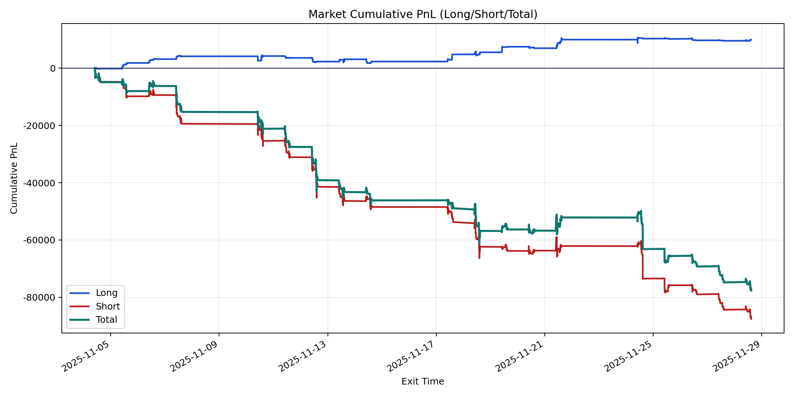
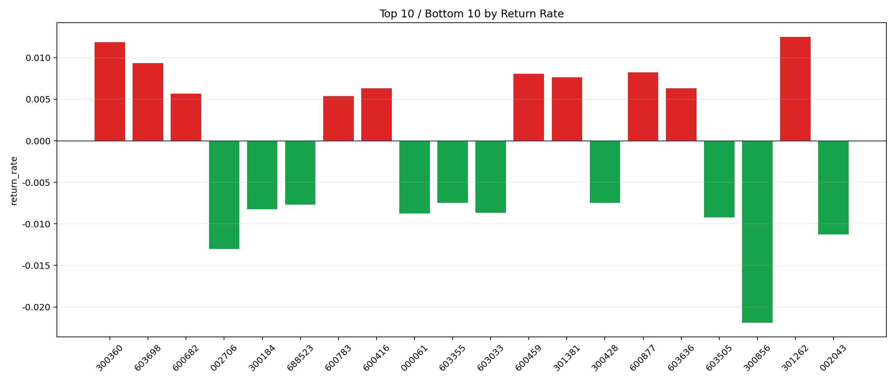

| repo_root | /home/haoranyou/data/output/alpha0.4_1w_5s_3ticks_index_filter/index_weights_1000 |
|---|---|
| period_months | 1 |
| period_label | 2025-11-04_to_2025-11-28 |
| start_time | 2025-11-04 09:50:17 |
| end_time | 2025-11-28 14:45:02 |
| n_trades | 11538 |
| n_symbols | 261 |
| total_pnl | -77658.54755000002 |
| long_total_pnl | 9916.072299999983 |
| short_total_pnl | -87574.61984999999 |
| total_entry_notional | 109058829.0 |
| long_entry_notional | 12471236.0 |
| short_entry_notional | 96587593.0 |
| total_return_rate | -0.0007120794186227694 |
| long_return_rate | 0.0007951154400413867 |
| short_return_rate | -0.000906686015563096 |
| top_symbols_by_return | ["301262", "300360", "603698", "600877", "600459", "301381", "600416", "603636", "600682", "600783"] |
| bottom_symbols_by_return | ["300856", "002706", "002043", "603505", "000061", "603033", "300184", "688523", "300428", "603355"] |

